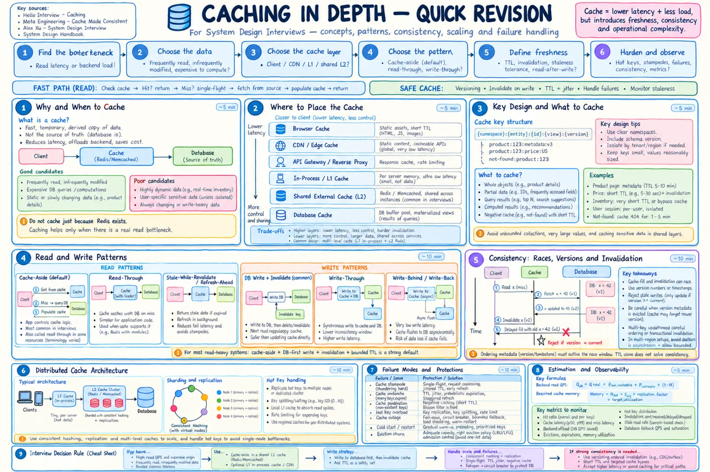
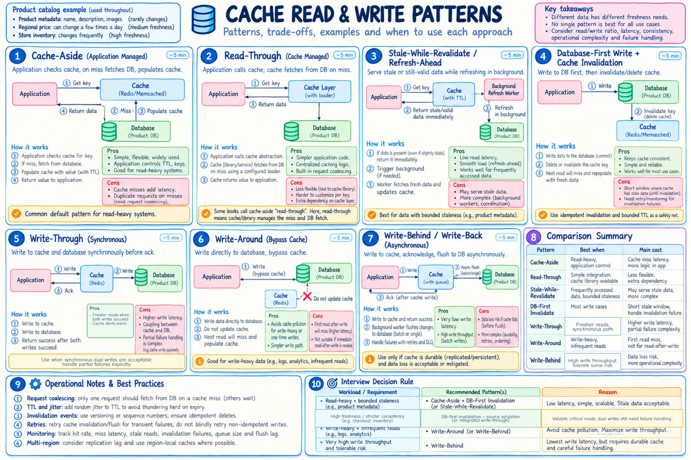

Topic · Caching in Depth
Caching Strategy
What to cache, where it lives, how keys are built, and which read/write pattern keeps it fresh enough.


Quick Revision
- Cache only a measured bottleneck: frequently read, expensive, small hot set, tolerates brief staleness.
- Default: shared L2 + cache-aside reads + DB write first + invalidate after commit + TTL safety net.
- Pick the layer: browser/CDN near users, L1 for tiny hot data, shared L2 across instances; DB stays authoritative.
- Freshness is per data type: metadata minutes, price seconds, checkout inventory from source.
- TTL controls age; LRU/LFU controls capacity. Add jitter.
Naming: cache-aside = app loads misses; read-through = cache loads misses. Alex Xu calls the app-managed flow "read-through" - define your meaning.
What and where
- Cache - fast, temporary, reconstructible copy of slower data. Hit ratio = hits ÷ (hits + misses); byte hit ratio for mixed sizes; an "effective hit" actually saves origin work.
- Cache when - keys reuse, origin is expensive, bounded staleness OK, hot set fits, access is skewed, tenant scope can be keyed, origin survives cache loss.
- Don't cache by reflex - first rule out indexing, query tuning, replicas, precomputation.
| Layer | Best for | Caveat |
|---|---|---|
| Browser / mobile | Static assets, public responses | Weak invalidation control |
| CDN / edge | Images, video, JS/CSS, public HTML/API | Key correctness, privacy, invalidation cost |
| Reverse proxy / gateway | Repeated HTTP responses | Auth, cookies, query params in key |
| L1 in-process | Tiny reference data, flags, very hot keys | Per-instance divergence, memory × replicas |
| Shared L2 | Entities, query results, counters, sessions | Network hop, hot shards |
| L1 + L2 | Very hot shared data | Two invalidation domains |
Values and keys
- Good values - hot entities, expensive query results, IDs/projections, precomputed feeds/permissions, short negative results.
- Avoid - unbounded lists, giant blobs, unsafe-to-be-stale data, user data without user/tenant in the key, cheap rarely-reused values.
- Key rules - include tenant, auth scope, locale, region, currency, experiment, projection; add schema version; namespace per service; canonicalize params.
{namespace}:{tenant}:{entity}:{id}:{view}:{locale}:{schemaVersion}
catalog:in:product:123:price:INR:v2
envelope = { payload, sourceVersion, cachedAt, expiresAt, schemaVersion }
Read and write patterns


| Read pattern | Use when | Risk |
|---|---|---|
| Cache-aside | General read-heavy; app wants control | Miss latency, duplicate fills |
| Read-through | A library owns loading | Extra dependency |
| Stale-while-revalidate | Latency matters, brief staleness OK | Stale reads; refresh must be reliable |
| Refresh-ahead | Predictable hot set | Wasted refreshes |
| Warming | Deploys, launches, failover | Can overload origin |
| Single-flight | Hot misses, stampedes | Lock timeouts |
- DB write → invalidate (default) - transaction updates row + outbox, commit, publish versioned invalidation, delete key; next read refills. Delete beats update: no wrong projections, fewer ordering bugs.
- DB write → update cache - only with exact canonical value + source version + compare-and-set.
- Write-through - narrower stale window, not automatically strongly consistent (partial failures).
- Write-around - skip cache for write-heavy, rarely-read data; still invalidate old entries.
- Write-behind - lowest write latency, but durability/ordering/replay risk; never only in a volatile cache.
- CDC / outbox - invalidate only after commit; idempotent, retryable consumers safe under duplicates and reordering.
TTL, eviction, admission
- TTL types - hard (never served after), soft (serve stale while refreshing), absolute, sliding (sessions). Jitter:
ttl × random(0.8, 1.2). - Set TTL from - max acceptable staleness + invalidation reliability. Too short = origin load; too long = stale exposure.
- Eviction - LRU (good default, scan pollution), LFU (stable skew), FIFO, random, no-eviction (only for non-reconstructible state). Redis uses approximate LRU/LFU.
- Admission - decides what enters: skip one-hit scans, giant objects, cheap values (TinyLFU or size/frequency thresholds).
Trade-offs
| Choice | Benefit | Cost / risk |
|---|---|---|
| Cache-aside | Simple; caches only demanded data | Miss latency; app owns stampede control |
| Read-through | Centralized loader | Less app control |
| Delete after write | Next read is authoritative | Next read misses |
| Update after write | Warm cache | Wrong projection, out-of-order risk |
| TTL-only | Simple, survives missing events | Stale until expiry |
| Invalidation + TTL | Fast convergence + safety net | Event pipeline complexity |
| Stale-while-revalidate | Low tail latency | Serves stale data |
| Write-through | Warm cache, narrower stale window | Write latency, dual-write failures |
| Write-behind | Lowest write latency, batching | Data-loss and ordering risk |
| L1 / L2 / L1+L2 | Speed / shared view / both | Divergence / hop / two domains |
| LRU vs LFU | Recency vs popularity | Scan pollution vs metadata/decay |
| Whole object vs IDs | One lookup vs compact reuse | Big invalidations vs more hydration |
Interview practice
Answer aloud, then reveal.
When should you introduce a cache in an HLD interview?
After identifying repeated expensive reads, origin saturation, or a latency target the origin can't meet. Quantify QPS and expected offload first.
What's the safest default caching strategy?
Cache-aside reads, DB-first durable writes, invalidate after commit, bounded TTL, single-flight for hot misses.
Why delete-on-write over update-on-write?
Avoids rebuilding a stale/incomplete projection and reduces out-of-order risk; cost is one miss.
How do you choose a TTL?
From max staleness, mutation rate, invalidation reliability, origin capacity, refresh cost - per data class, with jitter.
When should you not cache?
Origin already meets goals, low reuse, exact freshness needed, working set won't fit, or complexity exceeds the gain.